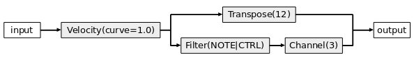
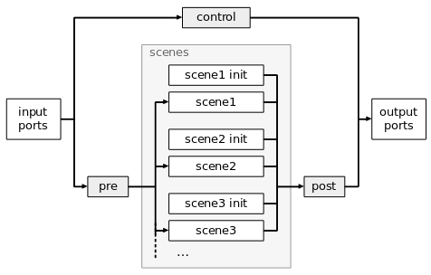

mididings configuration files are just Python scripts, although some of Python's features are used in ways for which they weren't intended ;)
Technically speaking, mididings is an embedded domain-specific language (DSL) based on Python.
The main difference between mididings and regular Python scripts is that mididings typically uses Python only at startup.
mididings patches consist of Python objects and nested data structures, but not actual Python code.
Internally, patches are converted to C++ objects, and the event processing is done entirely in C++.
It is however possible to call back into Python, if necessary.
Although mididings is a Python module that can theoretically be imported in other Python applications, it's really not designed to be used that way. Think of mididings as a standalone application, that just happens to use Python as its "user interface".
Let's start with something very simple:
from mididings import * run(Transpose(3))
The import statement imports everything from the mididings Python module into the global namespace. The run() function is then used to
run a simple patch, in this case consisting of just a single Transpose() unit.
You can start this script by saving it to a Python file and executing it, for example:
What this script does is to create an ALSA MIDI client with one input and one output port. It will then start listening for events on the input port, transpose all incoming note-on and note-off events up by 3 semitones, and send all events to the output port. Pressing Ctrl+C terminates the script.
Ok, that was easy. Now let's try something slightly more complex:
from mididings import *
config(
backend='jack-rt',
client_name='example',
)
run(
Velocity(curve=1.0) >> [
Transpose(12),
Filter(NOTE|CTRL) >> Channel(3),
]
)
The first thing that's new in this example is the config() function. This function is used to configure some global settings, and should usually be called only once, at the start of the script. Here, it is used to select the JACK backend instead of ALSA, and to change the JACK client name from 'mididings' to 'example'.
Now, let's look at the patch inside the run() function call. There are four mididings units used in this patch:
Each of these units is quite simple on its own, but what's important is how the units are connected to each other:
A graphical representation of the patch above would look something like this:

For incoming note-on, note-off and CC events, this patch will output two events: one on the original MIDI channel, with notes being transposed by one octave, and one on channel 3, with no transposition. All other event types will result in only one event being sent to the output, because those event types are filtered out in the lower branch of the patch, and thus never even reach the Channel() unit.
Often it's desirable to run not just a single patch, but many different ones which can be switched using a MIDI controller. With mididings it's possible to switch between an arbitrary number of "scenes", each of which consists of one patch, and optionally an "init-patch" that will be triggered every time you switch to that scene.
Here's an example:
from mididings import *
run(
scenes = {
1: Scene("channel 1 only",
Channel(1)
),
2: Scene("channel 2, program 23",
Channel(2),
Program(23) >> Channel(2)
),
3: Scene("channel 2, program 42",
Channel(2),
Program(42) >> Channel(2)
),
4: Scene("channel 1/3 split",
KeySplit('c3',
Channel(1),
Channel(3)
)
),
},
control = Filter(PROGRAM) >> SceneSwitch(),
pre = ~Filter(PROGRAM),
)
This script defines 4 scenes. In the first scene, all incoming events are simply routed to output channel 1. In scenes 2 and 3, events are routed to channel 2. Additionally, when switching to one of these scenes, MIDI program change messages will be sent on that channel first. The fourth scene splits the keyboard at C3 and routes both regions of the keyboard to different output channels.
The control patch is used to switch between these scenes. The filter lets only program changes pass, which then
trigger the scene switches.
In this example we assume that incoming program changes are only used for switching scenes, and should not be processed
by the currently active scene. Therefore the pre patch is used to filter out these events.
This is a complete overview of the event flow when using multiple scenes: 
The control, pre and post patches as well as any of the init patches are optional and can be omitted. The control patch can be used for any event processing that does not depend on the currently active scene.
Note that the use of init patches can often be significantly simplified by embedding them into the regular patches, in particular using the Output() unit and the OutputTemplate class.
With the mididings command line application, simple patches can also be specified directly in your favorite shell, so sometimes there's no need to write full-fledged Python scripts:
See 'mididings --help' for more options.
It's also worth mentioning that mididings can easily be used in an interactive Python session:
$ python -i -c "from mididings import *" >>> run(Transpose(3) >> Channel(2))